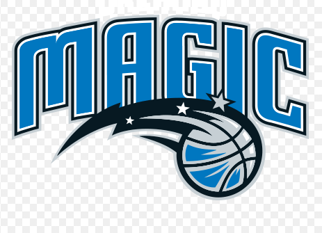
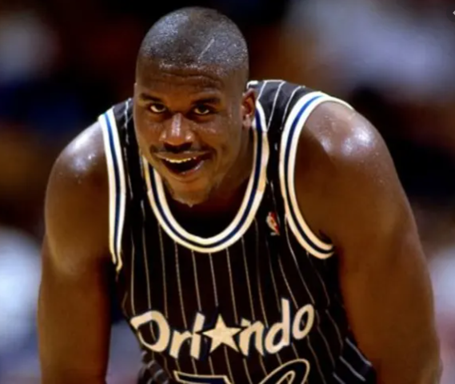
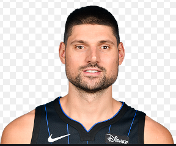

Magic
The Orlando Magic are an American professional basketball team based in Orlando, Florida. The Magic compete in the National Basketball Association (NBA) as a member of the league's Eastern Conference Southeast Division. The franchise was established in 1989 as an expansion franchise, and such notable NBA stars as Shaquille O'Neal, Penny Hardaway, Grant Hill, Tracy McGrady, and Dwight Howard have played for the club throughout its young history. As of 2020, the franchise has played in the NBA playoffs 16 times in 31 seasons, and twice went to the NBA Finals, in 1995 and 2009. Orlando has been the second most successful of the four expansion teams brought into the league in 1988 and 1989 in terms of winning percentage, only after the Miami Heat.
Shaquille Rashaun "Shaq" O'Neal ( born March 6, 1972) is an American former professional basketball player who is a sports analyst on the television program Inside the NBA on TNT. He played for six teams over his 19-year career in the National Basketball Association (NBA). O'Neal is regarded as one of the greatest basketball players of all time. At 7 ft 1 in (2.16 m) tall and 325 pounds (147 kg), he was one of the tallest and heaviest players ever. After playing college basketball for the LSU Tigers, O'Neal was drafted by the Orlando Magic with the first overall pick in the 1992 NBA draft. He quickly became one of the best centers in the league, winning Rookie of the Year in 1992–93 and leading his team to the 1995 NBA Finals. After four years with the Magic, O'Neal signed as a free agent with the Los Angeles Lakers. They won three consecutive championships in 2000, 2001, and 2002. Amid tension between O'Neal and Kobe Bryant, O'Neal was traded to the Miami Heat in 2004, and his fourth NBA championship followed in 2006. Midway through the 2007–2008 season he was traded to the Phoenix Suns. After a season-and-a-half with the Suns, O'Neal was traded to the Cleveland Cavaliers in the 2009–10 season. O'Neal played for the Boston Celtics in the 2010–11 season before retiring. O'Neal's individual accolades include the 1999–2000 Most Valuable Player (MVP) Award, the 1992–93 NBA Rookie of the Year award, 15 All-Star Game selections, three All-Star Game MVP awards, three Finals MVP awards, two scoring titles, 14 All-NBA team selections, and three NBA All-Defensive Team selections. He is one of only three players to win NBA MVP, All-Star Game MVP and Finals MVP awards in the same year (2000); the other players are Willis Reed in 1970 and Michael Jordan in 1996 and 1998. He ranks 8th all time in points scored, 6th in field goals, 15th in rebounds, and 8th in blocks. Due to his ability to dunk the basketball and score from close range, O'Neal also ranks third all time in field goal percentage (58.2%). O'Neal was elected into the Naismith Memorial Basketball Hall of Fame in 2016. He was elected to the FIBA Hall of Fame in 2017. In addition to his basketball career, O'Neal has released four rap albums, with his first, Shaq Diesel, going platinum. O'Neal is also an electronic music producer, and touring DJ, known as DIESEL. He has appeared in numerous films and has starred in his own reality shows, Shaq's Big Challenge and Shaq Vs.. He hosts The Big Podcast with Shaq. He is also the general manager of Kings Guard Gaming of the NBA 2K League.
Nikola Vučević born 24 October 1990 is a Montenegrin professional basketball player for the Orlando Magic of the National Basketball Association (NBA). He played college basketball for the University of Southern California before being drafted 16th overall in the 2011 NBA draft by the Philadelphia 76ers. He received his first All-Star selection in 2019.